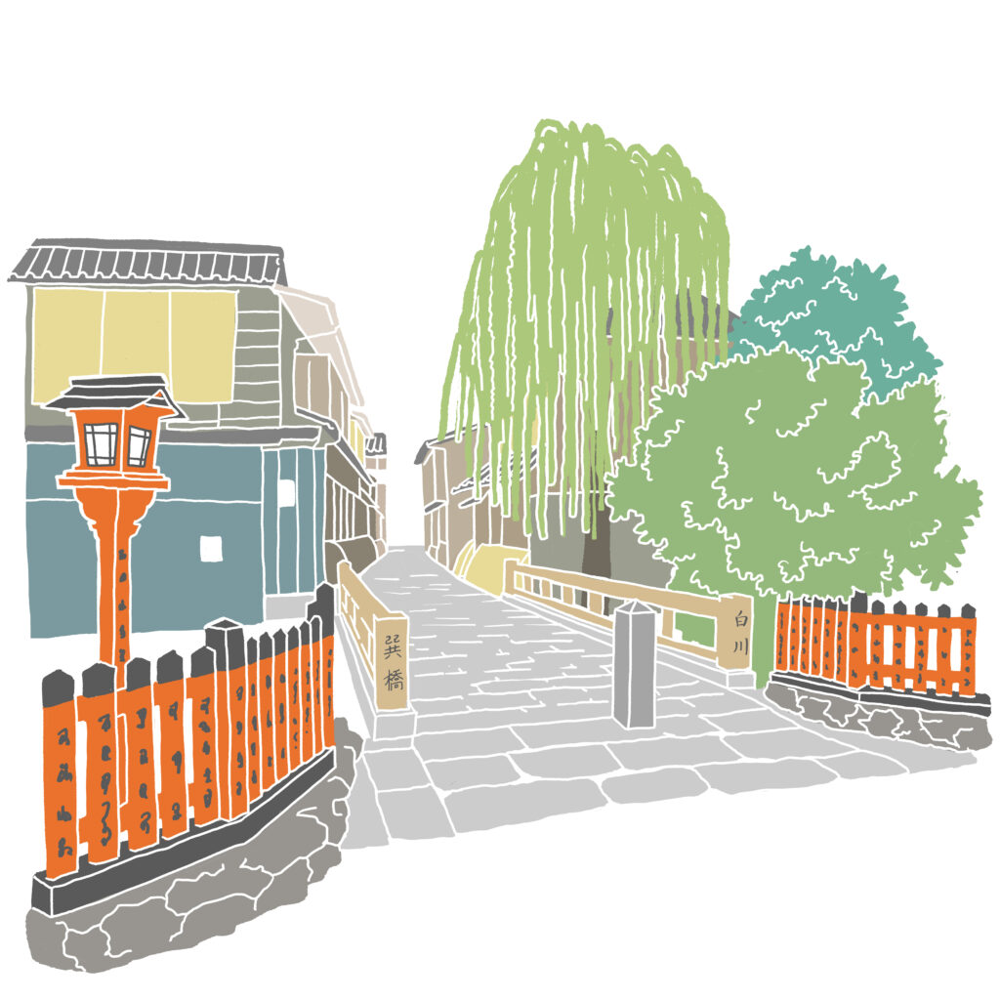
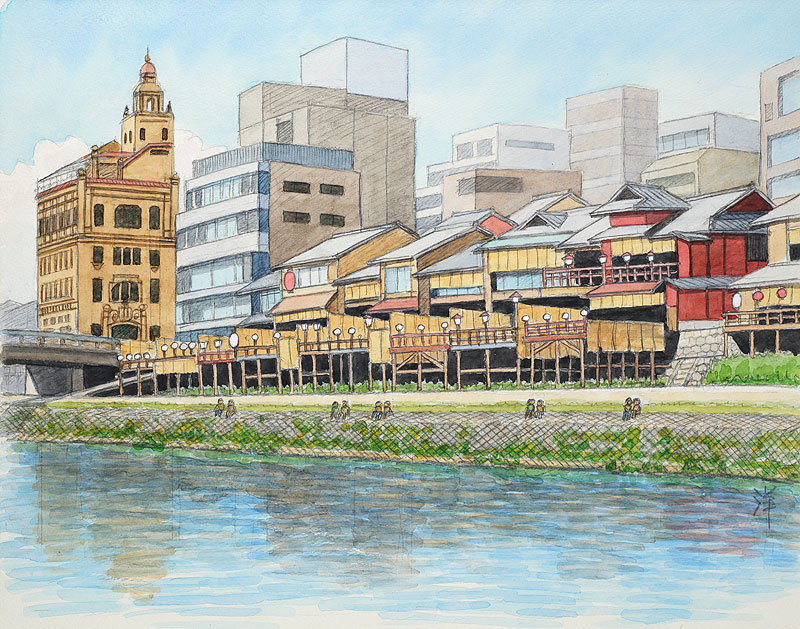
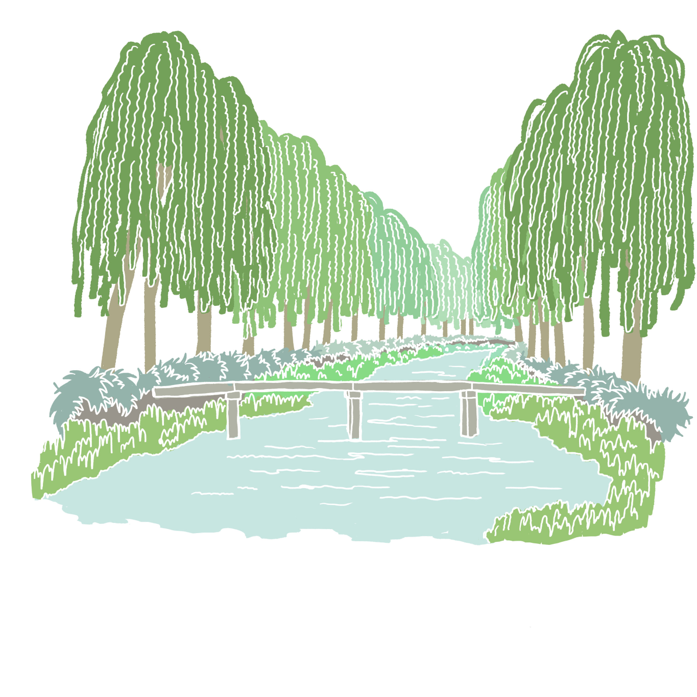
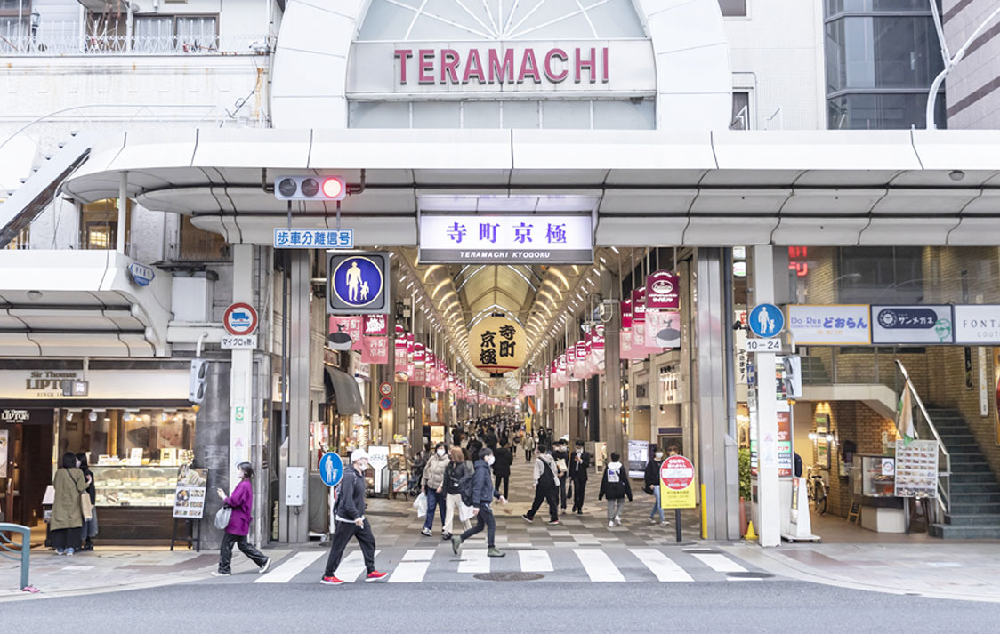
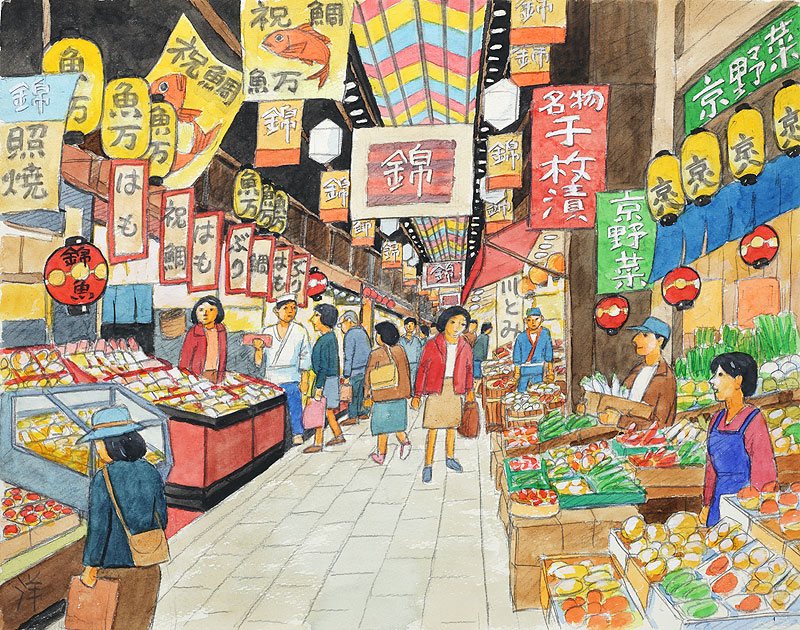

Tatsumi Bridge, Shirakawa

Gion's most photographed corner — and a filming location for Memoirs of a Geisha.
Open in Google Maps →Hanamikoji-dori

Real geisha district — a quick pass-through before heading west toward the river.
Open in Google Maps →Kamogawa Riverside

Kyoto's river of choice for an evening stroll. Watch for the couples sitting evenly spaced along the bank — a local phenomenon everyone notices, nobody fully explains.
Open in Google Maps →Pontocho

Kyoto's most atmospheric dining alley — quiet elegance, traditional restaurants, occasional glimpses of geisha culture. Best after dark, when the lanterns come on and the alley really comes alive.
Open in Google Maps →Kiyamachi

The nightlife strip along the Takase canal, dug in 1611 to move timber into the city. Willows and cherry trees line the water, with bars and izakaya lighting up after dark.
Open in Google Maps →Teramachi & Shin-Kyogoku

Two parallel shopping arcades, different personalities: Teramachi is calmer and older — Hideyoshi relocated Kyoto's temples here in the 1590s, so antique shops and traditional crafts still line it. Shin-Kyogoku, one street over, is livelier — built in 1872, packed with souvenirs and casual shopping. Most shops close around 8-9pm.
Open in Google Maps →Nishiki Market

"Kyoto's Kitchen" — a 400-year-old covered market street, packed with food stalls and local snacks. Most shops close by 7pm, so this one's better visited before the evening stops.
Open in Google Maps →